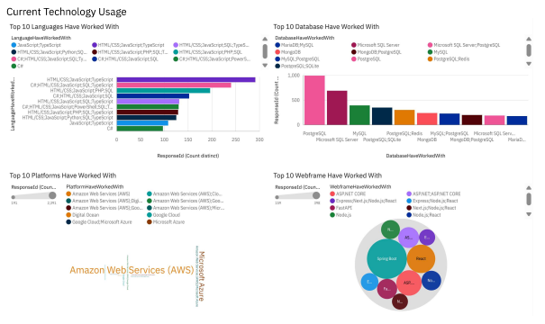
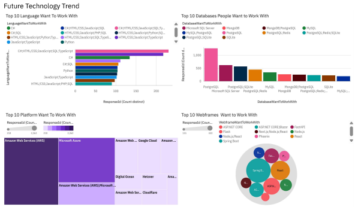
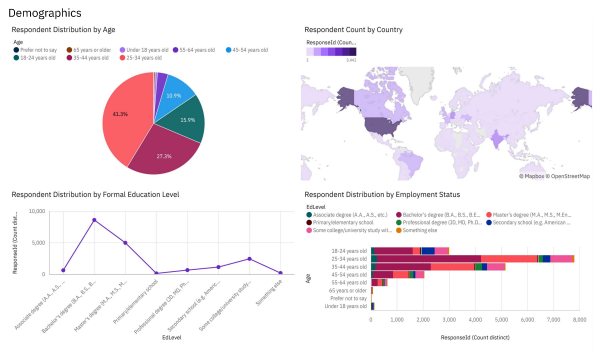

M.Pharm graduate building a career in healthcare & data analytics
M.Pharm graduate combining pharmaceutical research experience with practical data analytics skills in Python, SQL, Power BI and IBM Cognos.
Developed end-to-end analytical projects involving pharmaceutical financial benchmarking and large-scale survey data analysis. Interested in transforming complex healthcare, scientific and business data into actionable insights that support evidence-based decision-making.
Eli Lilly and Pfizer: financial and product analysis, FY2021–FY2025
Independent portfolio project. Python, Pandas, Power BI and SEC filings.
Five years of financial and product revenue data from SEC filings, cleaned and checked in Python. Two Power BI dashboards compare revenue growth, profitability, R&D spending and product concentration.
Table 2. Headline metrics from the analysis
Metric
Eli Lilly
Pfizer
Revenue, FY2021
$28.32B
$81.29B
Revenue, FY2025
$65.18B
$62.58B
Revenue CAGR, FY2021–FY2025
23.17%
−6.33%
Net profit margin, FY2025
31.67%
12.42%
Top product, share of FY2025 revenue
35.24%
13.01%
Top five products, share of FY2025 revenue
77.50%
47.92%
Key findings
Lilly’s growth leans on a few products. Mounjaro and Zepbound together made up about 56% of FY2025 revenue, and cardiometabolic products about 74%.
Pfizer’s revenue fell after the COVID-related sales of FY2021–FY2022, while Oncology and Specialty Care grew their share of its portfolio.
Method
Extracted financial and product revenue data from SEC filings and annual reports with Python.
Cleaned and transformed it in Pandas, and checked revenue totals against company-reported figures.
Fig. 3. Top revenue-generating products by company, with a year filter (FY2025 shown).
Lilly’s therapeutic-area categories and Pfizer’s commercial portfolio categories are different classification systems, so they are not directly comparable. Pfizer R&D here excludes acquired in-process R&D.
IBM Data Analyst Professional Certificate capstone. Python, Pandas, SQL/SQLite and IBM Cognos Analytics.
Which technologies do developers use today, and which do they want to use next? Survey responses were cleaned and explored in Python, queried with SQL, and presented in three IBM Cognos dashboard tabs.
The dataset covers software developers, not healthcare. The project shows transferable skills: cleaning a large dataset, comparing trends and reporting them in dashboards.
Programming languages: current usage and future preference
Current usage
JavaScript37,492
HTML/CSS31,816
Python30,719
SQL30,682
TypeScript23,150
Bash/Shell20,412
Java18,239
C#16,318
C++13,827
C12,184
Future preference
Python25,047
JavaScript23,774
SQL22,400
HTML/CSS20,721
TypeScript20,239
Rust17,232
Go13,837
Bash/Shell13,744
C#12,921
C++10,873
Respondents per language, top 10. Dark bars mark the movers the project highlights: Python rises from third to first, and Rust and Go enter the top 10.
Databases: current usage and future preference
Current usage
PostgreSQL25,536
MySQL21,099
SQLite17,365
Microsoft SQL Server13,275
MongoDB13,007
Redis10,463
MariaDB8,991
Elasticsearch6,533
Oracle5,273
DynamoDB4,138
Future preference
PostgreSQL24,005
SQLite13,489
MySQL12,269
MongoDB10,982
Redis10,847
Microsoft SQL Server7,905
Elasticsearch6,246
MariaDB5,947
DynamoDB3,503
Supabase2,930
Respondents per database, top 10. Dark bars mark SQLite, which rises from third to second, and Supabase, which enters the top 10. Oracle drops out of the future list.
Job postings by location
Number of job postings, seven locations
Washington DC5,316
Detroit3,945
Seattle3,375
New York3,226
Los Angeles640
San Francisco435
Austin434
Washington DC has the most postings of the seven locations analyzed.
Average annual salary by programming language
Average annual salary, top 10 languages
Swift130,801
Python114,383
C++113,865
JavaScript110,981
Java101,013
Go94,082
R92,037
C#88,726
SQL84,793
PHP84,727
The project does not state the currency or the pay period, so compare the languages with each other rather than reading the figures as absolute pay.
Fig. 4. Results from the capstone analysis, with respondent counts as reported in the project README.
Key findings
JavaScript led current language use (37,492 respondents). Python moved from third place to first in future preference (25,047), and Rust and Go entered the future top 10.
PostgreSQL led databases for both current use (25,536) and future preference (24,005). SQLite rose from third to second, and Supabase entered the future top 10.
Among the ten languages analyzed, Swift had the highest average annual salary (130,801), followed by Python (114,383).
Washington DC had the most job postings of the seven locations analyzed (5,316).
Method
Collected data through APIs, web scraping and course-provided datasets.
Handled duplicates, missing values and inconsistent entries.
Explored distributions, outliers and correlations, and queried the data with SQL/SQLite.
Charted the trends in Python.
Built three IBM Cognos dashboard tabs and wrote up the findings and implications.

Tab 1 covers the languages, databases, cloud platforms and web frameworks respondents use now. JavaScript, HTML/CSS and Python are among the most widely used, PostgreSQL and MySQL lead the databases, and AWS is a prominent cloud platform.

Tab 2 covers what respondents want to use next. Python has the strongest future preference among languages, PostgreSQL leads the databases, AWS leads the cloud platforms, and Spring Boot and React are prominent web frameworks.

Tab 3 covers who responded, by age, country, education and employment. Respondents are concentrated in the 35–44 and 45–54 age groups, the United States is the largest country group, and bachelor’s degree holders and full-time employees are the largest education and employment groups.
Fig. 5. The three IBM Cognos Analytics dashboard tabs.
My M.Pharm dissertation, published in the Journal of Liposome Research, with its design, methods and measured results.
Rational Design and Characterisation of Intranasal Gel Incorporating Eletriptan HBr-Loaded Solid Lipid Nanoparticles for Enhanced Brain Delivery in Migraine
Journal
Journal of Liposome Research
Published online
6 November 2026
First author
Shrikishan Budharam
Institution
Acharya & B.M. Reddy College of Pharmacy, Bengaluru (RGUHS)
Eletriptan hydrobromide-loaded solid lipid nanoparticles (ESLN) were developed and optimized, then built into a thermosensitive intranasal in situ gel to test enhanced brain delivery for migraine management.
The work covered formulation development, Design of Experiments, statistical optimization, physicochemical characterization, ex vivo permeation studies and in vivo brain biodistribution analysis.
Experimental design and statistical analysis
Solid lipid nanoparticle optimization
Design
Central Composite Design (CCD)
Variables
Glyceryl Monostearate (GMS) and Poloxamer 188
Responses
Particle size, zeta potential and entrapment efficiency
Analysis
Regression modelling, ANOVA and response surface analysis
Intranasal gel optimization
Design
3² full factorial design
Variables
Chitosan and Poloxamer 407
Responses
Gelation temperature, gelation time and viscosity
Analysis
Statistical model evaluation and formulation optimization
Characterization techniques
Particle size and polydispersity index
Zeta potential
Drug entrapment efficiency
FTIR
Differential Scanning Calorimetry (DSC)
Scanning Electron Microscopy (SEM)
Gelation temperature and gelation time
Viscosity and mucoadhesive strength
Ex vivo permeation, Franz diffusion cells
HPLC drug quantification
In vivo brain biodistribution
Histopathological evaluation
Key findings: formulation characterization
Values are mean ± the reported deviation, from the published article.
Nanoparticles
Mean particle size
257.4nm
± 106.3 nm
Zeta potential
−23.3mV
± 4.25 mV
Entrapment efficiency
71.77%
± 0.58%
Optimized intranasal gel
Gelation temperature
34.7°C
± 0.6 °C
Gelation time
68s
± 4.58 s
Viscosity at 25 °C
120cPs
± 8.6 cPs
Viscosity at 35 °C
11,230cPs
± 255 cPs
Ex vivoDrug permeation across tissue
Cumulative ex vivo drug permeation over 24 hours. Franz diffusion cells; bars show the mean, whiskers show the reported ± value.
ESLN-loaded gel65.29 ± 3.12%
Plain eletriptan gel51.69 ± 3.30%
0255075100
Cumulative drug permeation (%)
In vivoDrug exposure in the brain
Brain drug exposure, AUC0–∞. Measured in an in vivo brain biodistribution study, a separate experiment from the ex vivo permeation above.
ESLN-loaded gel22,910.8
Plain eletriptan gel11,904.15
05,00010,00015,00020,00025,000
AUC0–∞ (ng·h/g)
The ESLN-loaded gel gave about 1.9 times the brain exposure of the plain gel.
Planning an experiment and preparing a dataset follow the same discipline: design it, check it, then report it clearly. The table sets the dissertation beside the two analytics projects.
Table 4. The same steps in the dissertation and in the analytics projects
Step
In the lab
In analytics
Prepare
Planned experiments with Central Composite Design and a 3² factorial design.
Extracted and validated SEC filing data, and cleaned 65,437 survey responses.
Analyze
Fitted regression-based models to optimize parameters and predict outcomes.
Compared growth, margins and product concentration across two companies, and explored technology trends in the survey.
Report
Kept accurate, audit-ready documentation.
Built Power BI and IBM Cognos dashboards that summarize the findings for non-technical readers.
Skills
Grouped by what I use them for. They come from coursework, projects and academic research, not from professional employment.
Programming & data analysis
Python
Pandas
NumPy
SQL
Also Matplotlib and Requests for API data extraction. SQL covers joins, subqueries, CTEs, window functions, aggregations, views and stored procedures. Used in Eli Lilly vs Pfizer and the Stack Overflow survey, plus SQLNest coursework.
Seeking analyst roles in pharmaceutical, healthcare, CRO and clinical research teams, where pharmaceutical knowledge and careful data analysis are valuable.
2023–2025
M.Pharm, Pharmaceutics
Acharya & B.M. Reddy College of Pharmacy, RGUHS. CGPA 8.5
2018–2022
B.Pharm
PES College of Pharmacy, RGUHS. CGPA 7.11
Jan–Feb 2023
Internship, Quality & Documentation
Overseas Pharma Pvt. Ltd., Bengaluru. Supported data accuracy checks and structured documentation within a regulated manufacturing environment.
Eleven courses covering data analytics, Excel, Python, SQL, data visualization, dashboards with Cognos, a capstone project and generative AI for analytics.
View the 11 courses
Introduction to Data Analytics
Excel Basics for Data Analysis
Data Visualization and Dashboards with Excel and Cognos
Python for Data Science, AI & Development
Python Project for Data Science
Databases and SQL for Data Science with Python
Data Analysis with Python
Data Visualization with Python
IBM Data Analyst Capstone Project
Generative AI: Enhance your Data Analytics Career
Data Analyst Career Guide and Interview Preparation
Completed as a training course in Good Clinical Practice.
Contact
Open to entry-level analyst roles in pharmaceutical, healthcare, CRO and clinical research teams. Email is the quickest way to reach me, and I am also on LinkedIn.